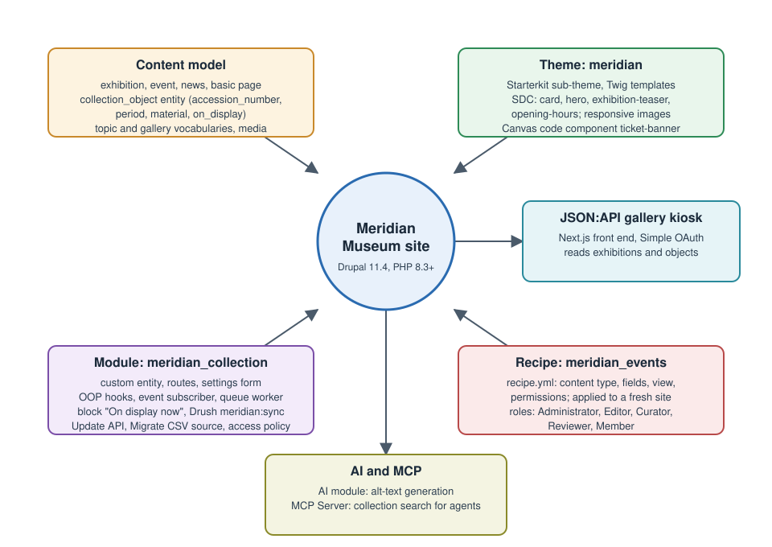

Drupal
|
This content was generated with the assistance of AI and should be verified against the official documentation before being relied on in production. |
Drupal is a free and open-source content-management framework written in PHP on top of Symfony components. It stores
structured content in entities and fields, keeps site configuration in exportable YAML, renders pages through render
arrays and Twig, and exposes the same content through JSON:API, REST, GraphQL and the Model Context Protocol. It runs
very large sites and small ones from the same code base, and its distinguishing strengths are content modelling,
roles and permissions, multilingual support, a configuration-management workflow and a long security track record. This
sub-section explains it from the first composer create-project to a module that syncs museum objects from an API and a
headless kiosk that reads them back.
Who this sub-section is for
-
Site builders and editors who model content types, fields, taxonomies, media, menus, blocks, views and layouts, set up roles and a moderation workflow, and write content in CKEditor 5 or Canvas without code.
-
Administrators who install Drupal with Composer and DDEV, configure
settings.phpper environment, manage configuration between environments, apply security updates, tune caching and cron, back up and restore, and harden a production site. -
Themers who generate a theme with Starterkit, write Twig templates, preprocess functions, libraries and Single Directory Components, and make the result responsive, accessible and fast.
-
Module developers who write modules with services, OOP hooks, plugins with PHP attributes, routes, forms, entities, queues, the Update and Migrate APIs, tests and Drush commands, and who ship them through CI.
-
Architects and front-end developers who run Drupal as a headless back end behind Next.js, and teams that connect it to AI providers and AI agents.
The running example: Meridian Museum
Every page uses one fictitious scenario, the Meridian Museum, a regional science museum whose site is built step by step. The figure shows how the parts fit together.

-
Content: exhibitions (content type
exhibitionwith dates, gallery and hero media), events (event, with a date range and ticket link), news, basic pages (Visit, Accessibility, About) and a collection of objects, a custom content entitycollection_objectwith the fieldsaccession_number,period,material,dimensionsandon_display. The taxonomies aretopicandgallery, and the media types are image, document and remote video. -
People: the roles Administrator, Content Editor, Curator, Reviewer and Member (a logged-in visitor), with a draft, review and published moderation workflow.
-
Languages: English (default) and Spanish, with translated content, configuration and interface.
-
Theme:
meridian, generated with Starterkit, with Single Directory Components (card,hero,exhibition-teaserandopening-hours), responsive images and a Canvas code component,ticket-banner. -
Module:
meridian_collection, with the custom entity, routes and a controller, a settings form, a service, an event subscriber, OOP hooks, the block plugin "On display now", a field formatter for accession numbers, a queue worker that syncs objects from a fictitious collections-management API, the Drush commandmeridian:sync, an Update API post-update, a Migrate source for a CSV import and an access policy for curators. -
Recipe:
meridian_events(content type, fields, view and permissions), applied to a fresh site. -
Operations: DDEV locally, Docker Compose for CI, staging and production with configuration management, Redis, Varnish, cron, Automatic Updates and backups.
-
Headless and AI: a Next.js gallery kiosk over JSON:API with Simple OAuth, the AI module generating alt text, and the MCP Server module exposing collection search to an AI agent.
No real names, tokens or credentials appear anywhere; secrets always come from environment variables or are obvious placeholders.
Version baseline
Everything in this sub-section was checked against the official documentation on 2026-10-30. The state of the platform on that date is:
| Item | State on 2026-10-30 | What the pages assume |
|---|---|---|
Drupal 11 |
11.4.0 was released on 2026-07-01 and 11.4.x is the current production branch (11.4.11 is its latest patch release). 11.5 is scheduled for December 2026. |
New sites start on Drupal 11.4. Examples are written for 11.4.x. |
Drupal 12 |
Scheduled, not released: 12.0.0 is planned for the week of 2026-12-07. It requires PHP 8.5 and Symfony 8, and it refuses to update from 11.2 or earlier. |
Described as an upcoming event. Preparing for Drupal 12 explains how to get ready. |
Drupal 10 |
End of life is scheduled for 2026-12-09. Its last minor is 10.6, and from 10.6 the upgrade target is 11.3 or later. |
No page recommends starting a new site on Drupal 10. Upgrading Drupal 10 to 11 covers the move. |
Drush |
Drush 13 serves Drupal 10.2 and later and 11; Drush 14 serves 11.3 and later and 12. |
Install it per project with |
PHP |
Drupal 11.4 runs on PHP 8.3 and later. |
Examples use PHP 8.3 or later syntax. |
Drupal uses semantic versioning: a feature minor ships about every six months (June and December), bugfix releases usually come on the first Wednesday of a month and security releases on the third, and security advisories cover the two most recent minors only. Drupal Versions, Release Cycle and Support explains the cadence, the support windows and where to follow change records. Dates marked "scheduled" or "planned" are plans, not facts.
Many older books and tutorials describe Drupal 10.0 or 10.1. They show plugin annotations (attributes since 10.2), hooks
only as .module functions (OOP hooks since 11.1), module upload from the administration UI (removed in 10.4 and 11.0),
the Article and Page content types created by the Standard profile (no longer created in 11.4), Drush commands
declared with annotations and a drush.services.yml file (gone in Drush 13) and Drupal 11 as a future release.
Where Older Books and Tutorials Are Outdated lists
each point with its correction.
What’s covered
Getting Started
What Drupal is, how releases and support work, what a server needs, how to install with Composer and DDEV, Drupal CMS and the project layout.
Site Building
Modelling content and presenting it without code: fields, taxonomy, media, editors, menus, blocks, Views, display modes, layouts, Canvas, roles, moderation, Workspaces, languages, search and visitor forms.
Administration
Running a site: settings per environment, configuration management, updates and advisories, recipes, cron, caching, hardening, files, backups, multisite, logging and the administration interface.
Theming
Starting a theme and shaping markup: the render pipeline, Twig, preprocess, libraries, Single Directory Components, responsive images, theme settings, tooling, accessibility and mail templates.
Module Development
Writing modules: anatomy, services, hooks, plugins, routes, forms, entities, events, configuration, the database, access, queues, updates, AJAX and HTMX, translation, Migrate and tests.
APIs & Headless
Using Drupal as a content back end: JSON:API, REST, GraphQL, authentication with OAuth and a Next.js front end.
Tooling & Delivery
Drush, coding standards, static analysis, CI/CD, containers and contributing to the community.
Upgrades
Moving forward: Drupal 10 to 11, Drupal 7 migrations, removed core modules and preparing for Drupal 12.
Reading path
Related material on this site
| Page | Why it is related |
|---|---|
The overview of all CMS sub-sections. |
|
Cross-CMS metrics and a decision table; the Drupal decision guide links to it instead of repeating it. |
|
Sibling sub-sections, for the cases where another CMS fits better. |
|
The other PHP CMS sub-section of this site. |
|
PHP web development; its introduction places Drupal among PHP platforms. |
|
The language itself: Composer, PSR standards, PHPUnit, static analysis, OPcache and debugging. |
|
Server-side frameworks as an alternative to a CMS. |
|
Docker and Kubernetes |
Containers and orchestration behind Docker and Containers. |
MySQL, MariaDB and PostgreSQL background, and the Redis cache back end. |
|
The front end of the gallery kiosk and the cross-origin rules it needs. |
|
Background for the accessibility pages of the theming group. |
|
Browser-level testing tools used next to Drupal’s own Nightwatch and functional tests. |
|
Background for Authentication and OAuth. |
|
Background for MCP Server and AI Agents. |
|
Online shops; Drupal Commerce is out of scope here. |
Bibliography
Every source below is the official site, repository, release note or documentation page of the product, library or
service it supports, and each entry links to it. The links were collected on 2026-10-30 from the == References section
of every page in this sub-section, where each page lists the exact pages its facts and examples derive from. Drupal
documentation is revised continuously: open an entry and confirm its content and version before you rely on it. Where this
bibliography and a page’s own References section appear to disagree, the official documentation linked from the page
wins. An entry marked "(unverified)" is a publisher link built from the book’s ISBN that was not confirmed on
2026-10-30; if it does not open, search the publisher’s site for the ISBN.
Books
These books were compared with the official documentation for structure, recipes and operational practice. They describe Drupal 10.0 and 10.1, so where they disagree with the current documentation the pages say so in their own words, and Where Older Books and Tutorials Are Outdated collects the corrections. No text, code or figure is copied from them.
-
Matt Glaman and Kevin Quillen, Drupal 10 Development Cookbook, 3rd ed. (Packt Publishing, 2023), ISBN 978-1-80323-496-0: Packt product page (unverified).
-
Adam Bergstein, Drupal 10 Masterclass (Packt Publishing, 2023), ISBN 978-1-83763-310-4: Packt product page (unverified).
-
Luca Lusso, Modernizing Drupal 10 Theme Development (Packt Publishing, 2023), ISBN 978-1-80323-809-8: Packt product page (unverified).
Drupal User Guide
-
Drupal User Guide 11.10: Synchronizing Configuration Versions
-
Drupal User Guide 11.11: Managing File and Configuration Revisions with Git
-
Drupal User Guide: Downloading and Installing a Theme from Drupal.org
-
Drupal User Guide: Using Composer to Download and Update Files
-
Drupal User Guide: 2.3. Concept: Content Entities and Fields
-
Drupal User Guide: 6.3. Adding Basic Fields to a Content Type
Getting started, administering, updating and upgrading
Core modules, contributed modules and extending Drupal
Develop: modules, theming, testing and decoupled Drupal
-
Converting from .module-file to an object oriented class method
-
Coding standards (deprecated page that points to the new location)
-
Adding assets (CSS, JS) to a Drupal theme via *.libraries.yml
-
Drupal.org: Creating automation tools for custom themes (Gulp.js)
-
Drupal.org: Modules and Tools that extend Single-Directory Components
-
Drupal documentation: Using Composer to install Drupal and manage dependencies
Drupal APIs
-
Parameters in routes: Implementing custom parameter converters
-
Routing system: Routing-related objects (Route, CurrentRouteMatch, RouteMatch, Url)
-
Drupal APIs: Defining and using content entity field definitions
-
Entity API: Converting a content entity type to be revisionable and publishable
-
Drupal.org: Writing migrations for contributed and custom modules
-
Routing system: Altering existing routes and adding new routes based on dynamic ones
-
Routing system: Introductory Drupal routes and controllers example
Projects, releases, security and community pages
Change records and issues
-
Core issue 214190: Administer node published status permission
-
Multi-site installation (Drupal 7 guide with general shared-codebase caveats)
-
Form tokens are now rendered lazily, allow forms to opt in to be cacheable
-
Disabling caching during development (settings.local.php method)
-
Change record: Queue workers can ask for immediate requeueing
-
Change record: Super user access policy (security.enable_super_user)
-
Core issue: Provide documentation/default server block for Nginx server
-
Change record: Add theme support for content of 401/403/404 responses (8.8.0)
-
Change record: New filename sanitization settings during upload
-
Drupal issue: Add a permission to view unpublished block content
-
Change record: Support for automatic entity updates has been removed
-
Change record: Configurable lazy loading for image formatters
-
Change record: State service now uses a cache collector for performance
-
Change record: Access checking must be explicitly specified on content entity queries
-
Change record: Highly critical service advisories displayed to administrators
-
Change record: Plugins converted from Annotations to Attributes in 10.3.0
-
Change record: Workflow setting to control the moderation state of new translations
-
Change record: Image formatters can choose lazy or eager loading
-
Change record: Classy removed and replaced with Starterkit theme generator
-
Change record: CKEditor 4 is removed from Drupal Core in 10.0.0
-
Change record: Use symfony/runtime for less bespoke bootstrap
-
Change record: Simple OAuth 6.0.x removes unrecommended grant types
-
Change record: Block administration page paths have changed (10.1.0)
-
Change record: Autowiring is enabled in core.services.yml (10.2)
-
Change record: ConfigFormBase and the #config_target property
-
Change record: Plugin implementations should use PHP attributes instead of annotations
-
Change record: Plugin types should use PHP attributes instead of annotations
-
Change record: AutowireTrait allows ContainerInjectionInterface classes to be autowired (10.2)
-
Change record: New parameter added to ConfigFormBase::__construct
-
Change record: Config schema constraints and FullyValidatable
-
Change record: RendererInterface::renderPlain() is deprecated
-
Change record: FileExists enum replaces the FileSystemInterface exists constants
-
Change record: Services can now use tagged iterators in services.yml files (10.3)
-
Drupal core issue: Ability to edit content in Live while it’s also being edited in other workspaces
-
Change record: Support for object oriented hook implementations
-
Change record: Tests with PHPUnit 10 attributes are now supported
-
Change record: Services can now define service closures as arguments in services.yml files (10.3)
-
Change record: The default for 'Who can register accounts' changed
-
Change record: Config action names changed to createIfNotExists and simpleConfigUpdate
-
Remove use of deprecated "spaceless" filter in core templates
-
Change record: Hook implementations can now be ordered with an order parameter (11.2)
-
Change record 3496491: preprocess hooks as object oriented hooks (11.2)
-
Change record: hook_module_implements_alter requires LegacyModuleImplementsAlter (11.2)
-
Change record: status and info settings in block_content blocks are deprecated (11.3.0)
-
Change record: New image effect, Convert to AVIF (with fallback), added (11.2.0)
-
Change record: authorize.php, FileTransfer and Updater deprecated
-
Change record: Order of procedural and object oriented hook implementations (11.2)
-
Change record: Brotli compression for aggregated CSS and JavaScript (11.4)
-
Change record: Default password hashing algorithm is now argon2id
-
Change record: Publishing a workspace will update the changed time for its entities
-
Change record: New permission available to view unpublished block content
-
Change record: node_access_rebuild() and node_access_needs_rebuild() are deprecated
-
Change record: PluginBase provides create() factory method with autowired parameters (11.3)
-
Change record: The .engine extension has been deprecated. Use tagged services instead.
-
Change record: New trait assists classes building render arrays for HTMX
-
Change record: doctrine/annotations has been forked into core
-
Change record: The workspaces.association service has been replaced by workspaces.tracker
-
Change record: Constraint plugins must use named arguments instead of an options array
-
Drupal core issue: Move the remaining UI bits to the workspaces_ui module
-
Change record: HTMX requests may be configured to use the drupal_htmx wrapper format
-
Change record: Procedural functions converted to methods and deprecated (11.4)
-
Change record: FormBase provides create() factory method with autowired parameters (11.4)
-
Change record: Class Variance Authority (CVA) support added to Twig
-
Change record: dr - Drupal CLI capable of running commands from modules
-
Change record: Library definitions now support a fonts key for preloading
-
Change record: Procedural hooks are collected only from main extension files (12.0)
-
Change record: The .module file extension has been deprecated
-
Change record: Dangerous characters in filenames are replaced
-
Change record: The .profile file extension is deprecated (11.5)